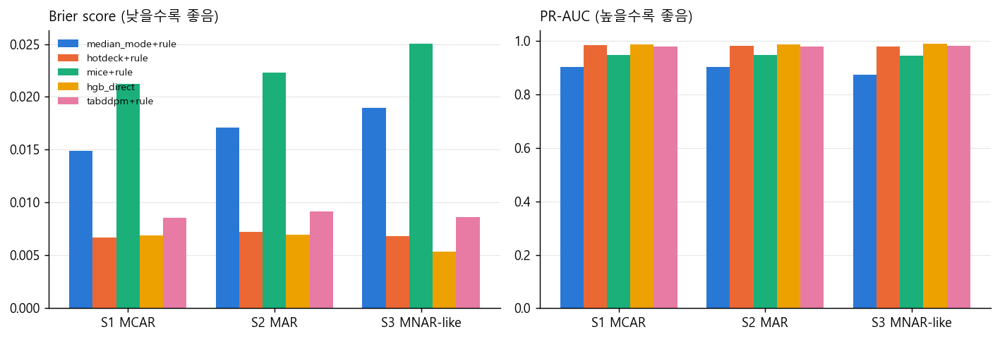
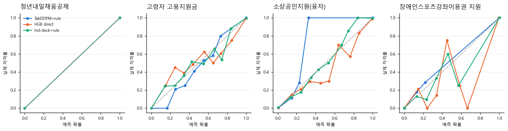
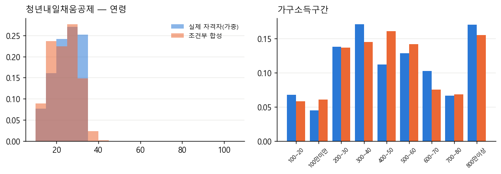
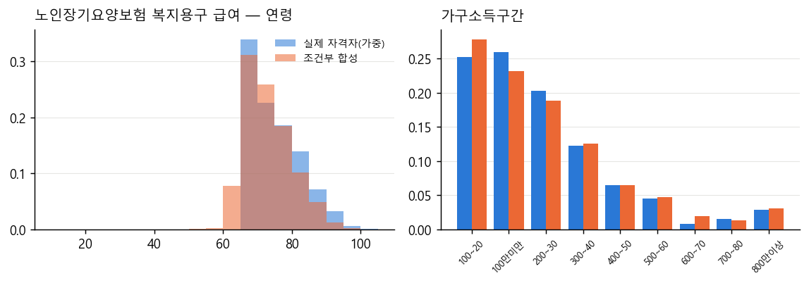
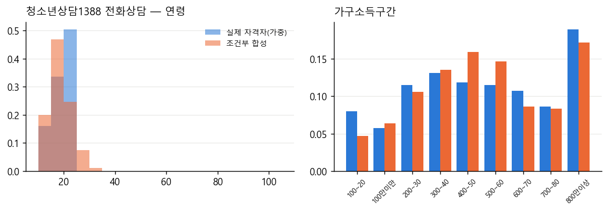
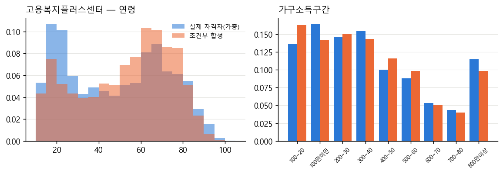
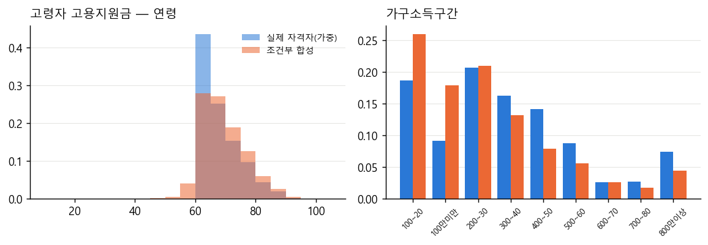
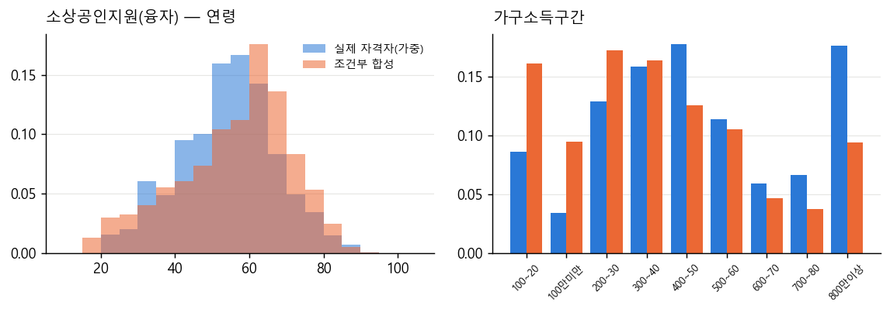
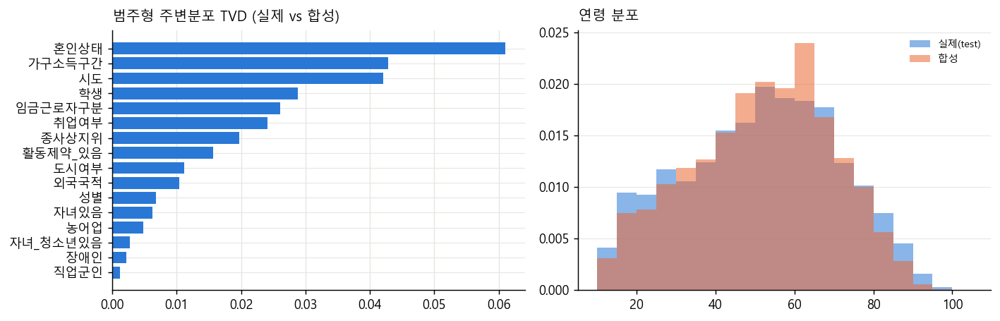

생성형 확산모델(TabDDPM) 기반 정책 자격확률 추정·수급 가능자 특성화
- 작성일: 2026-08-21 | 데이터: 통계청 사회조사 2025 (33,944명, 18,467가구) × 중앙부처 복지서비스 변수화 테이블(461개)
- 본 보고서의 '자격'은 모두 규칙 기반 추정 자격(rule-based estimated eligibility) 이며 행정상 실제 수급 자격이 아니다 (사회조사에 재산·보훈·보호종료·행정소득·영유아 자녀 정보 없음).
- 네 가지 작업을 명확히 구분한다: ① 규칙에 의한 자격 판정 ② 부분 정보에서의 자격확률 추정 ③ 정책 수급 가능자 특성화 ④ 합성 데이터 생성·평가
연구 질문
- RQ1 부분 정보(X_obs)만 있을 때 정책 자격확률 P(Y_j=1|X_obs)를 얼마나 잘 추정할 수 있는가? (판별력 + 보정)
- RQ2 TabDDPM 다중 대체 + 규칙 엔진이 단순 대체·hot-deck·MICE·HGB 직접분류보다 유용한가?
- RQ3 조건부 생성 p(X|Y_j=1)이 실제 규칙 기반 자격자 집단의 특성을 얼마나 충실히 재현하는가? (분포 유사성 + 규칙 일관성)
- RQ4 (부가) 합성 인구 데이터의 효용과 프라이버시 위험은 어느 수준인가?
1. 규칙 엔진에 의한 자격 판정 (Step 1)
- 3값 논리: 1 충족 / 0 탈락 / NaN 판정 불가. AND는 0 우선(0∧NaN=0, 1∧NaN=NaN), OR은 1 우선(1∨NaN=1, 0∨NaN=NaN).
logical_and_3value()·logical_or_3value()로 구현하고 지원대상·소득·자녀연령대 OR 그룹에 적용. - 461개 정책 중 Tier A(사회조사 변수만으로 전 표본 판정, proxy 미사용) 95개, Tier B(소득 proxy·근사 포함 또는 일부 NaN) 336개, 전원 판정 불가 30개.
- 분석 정책: Tier A 13개(주 분석), Tier B 6개(민감도). 선정 기준: train 가중 자격률 1~50%, 양성 ≥300, 조건 구조 다양성. train 통계만 사용.
| Tier | 정책 | 조건 | train 가중 자격률 | 양성수 |
|---|---|---|---|---|
| A | 청년내일채움공제 | 연령 | 27.2% | 5,036 |
| A | 노인장기요양보험 복지용구 급여 | 연령 | 21.8% | 6,690 |
| A | 청소년상담1388 전화상담 | 연령 | 12.2% | 2,397 |
| A | 고용복지플러스센터 | 미취업요구 | 39.3% | 9,583 |
| A | 고령자 고용지원금 | 연령,취업요구 | 13.9% | 4,202 |
| A | 소상공인지원(융자) | 연령,자영업 | 12.4% | 3,225 |
| A | 청년창업농장학금 지원 | 연령,학생 | 10.0% | 2,019 |
| A | 경남동행론(직접대출) | 연령,거주지역 | 5.9% | 1,682 |
| A | 장애인스포츠강좌이용권 지원 | 연령,지원대상OR | 4.9% | 1,427 |
| A | 산림보호지원단 | 연령,미취업요구,학생 | 3.4% | 639 |
| A | 청소년산모 임신·출산 의료비 지원 | 연령,여성전용 | 3.4% | 736 |
| A | 농업인건강보험료지원 | 농어업 | 3.0% | 1,150 |
| A | 여성장애인교육지원 | 여성전용,지원대상OR | 2.0% | 603 |
| B | 영양플러스 사업 | 연령,소득 | 15.9% | 3,362 |
| B | 청년내일저축계좌 | 연령,지원대상OR | 3.0% | 585 |
| B | 노후긴급자금 대부사업 | 연령,소득 | 2.9% | 996 |
| B | 연탄쿠폰 | 연령,소득,1인가구 | 2.8% | 1,190 |
| B | 자산형성지원사업(희망저축계좌Ⅰ, Ⅱ) | 지원대상OR | 20.2% | 5,613 |
| B | 직업훈련생계비대부 | 지원대상OR,자영업 | 8.0% | 2,180 |
주의: Tier A는 '인코딩된 조건이 모두 판정 가능'을 뜻하며, 원문에만 있고 변수화되지 않은 세부 조건(예: 중소기업 정규직 신규 취업)은 반영되지 않아 일부 정책의 자격률은 과대 추정된다.
2. 부분 정보에서의 자격확률 추정 (Step 2~5)
설계: P(Y_j=1|X_obs) = ∫ 1{f_j(X_obs,x_mis)=1} p(x_mis|X_obs) dx_mis 를 TabDDPM 다중 대체(K개)로 근사 — Y는 조건으로 사용하지 않는다. 한 사람의 K개 완성 프로필을 모든 정책 규칙에 동시에 적용한다.
- 데이터 분할: 가구 단위 GroupShuffleSplit train 23,739 / valid 5,027 / test 5,178 (가구 중복 0). 인코딩·대체모델·TabDDPM·HGB 모두 train에서만 fit.
- 결측 시나리오: S1 MCAR(소득 30%·장애 10%·취업 20%·자녀 15% 등) / S2 구조적 MAR(젊을수록·비취업일수록 소득 미응답↑, 고령일수록 취업·자녀 미응답↑) / S3 MNAR-like 스트레스(저소득·자영업자 소득 미응답 2.5배, 장애인 장애 미응답↑ — robustness test로 해석).
- 비교 방법: ① 중앙값/최빈값 대체+규칙 ② hot-deck(최근접 donor 20명, K=50)+규칙 ③ 범주형 인지 MICE(HGB 연쇄, K=50)+규칙 ④ HGB 직접예측(결측 그대로 입력) ⑤ TabDDPM 다중 대체(K=100)+규칙.
- TabDDPM population 모델: 수치 2(가우시안 확산)+범주 16(다항 확산), MLP 512×4, T=1000 코사인, 마스크 조건부 학습; 1459 epoch(조기 종료), best valid loss 0.2764. 초기 400 epoch 모델(valid 0.289) 대비 장기 학습 모델(valid 0.276)을 최종 채택 — 결합 구조 재현이 개선됨.
- 결측 조건부 샘플링 방법 비교(valid, S1, K=20): 방법 A(RePaint-style 관측 고정) Brier 0.0095 / 방법 B(마스크 조건부 학습) Brier 0.0096 → 방법 A 채택. RePaint는 이미지 확산용 기법의 차용임을 명시한다.
2.1 Tier A 정책 평균 성능 (test, 시나리오 × 방법)
| 시나리오 | 방법 | ROC-AUC | PR-AUC | Recall | Precision | F1 | Brier | Log-loss | ECE |
|---|---|---|---|---|---|---|---|---|---|
| S1 | median_mode+rule | 0.950 | 0.902 | 0.904 | 0.986 | 0.939 | 0.015 | 0.205 | 0.015 |
| S1 | hotdeck+rule | 0.996 | 0.986 | 0.946 | 0.983 | 0.963 | 0.007 | 0.025 | 0.002 |
| S1 | mice+rule | 0.984 | 0.948 | 0.948 | 0.933 | 0.929 | 0.021 | 0.154 | 0.022 |
| S1 | hgb_direct | 0.998 | 0.988 | 0.942 | 0.982 | 0.961 | 0.007 | 0.023 | 0.003 |
| S1 | tabddpm+rule | 0.996 | 0.981 | 0.921 | 0.986 | 0.950 | 0.009 | 0.027 | 0.003 |
| S2 | median_mode+rule | 0.953 | 0.903 | 0.910 | 0.980 | 0.938 | 0.017 | 0.236 | 0.017 |
| S2 | hotdeck+rule | 0.995 | 0.983 | 0.947 | 0.981 | 0.962 | 0.007 | 0.027 | 0.002 |
| S2 | mice+rule | 0.986 | 0.948 | 0.949 | 0.935 | 0.931 | 0.022 | 0.169 | 0.022 |
| S2 | hgb_direct | 0.998 | 0.986 | 0.945 | 0.982 | 0.963 | 0.007 | 0.023 | 0.003 |
| S2 | tabddpm+rule | 0.996 | 0.980 | 0.926 | 0.981 | 0.949 | 0.009 | 0.028 | 0.003 |
| S3 | median_mode+rule | 0.936 | 0.873 | 0.877 | 0.981 | 0.917 | 0.019 | 0.262 | 0.019 |
| S3 | hotdeck+rule | 0.994 | 0.980 | 0.925 | 0.982 | 0.948 | 0.007 | 0.026 | 0.006 |
| S3 | mice+rule | 0.982 | 0.944 | 0.903 | 0.937 | 0.902 | 0.025 | 0.191 | 0.026 |
| S3 | hgb_direct | 0.999 | 0.990 | 0.951 | 0.975 | 0.962 | 0.005 | 0.018 | 0.003 |
| S3 | tabddpm+rule | 0.997 | 0.984 | 0.906 | 0.985 | 0.938 | 0.009 | 0.027 | 0.008 |
핵심 비교(TabDDPM+규칙 − HGB 직접예측): S1: Brier 차이 +0.0017, PR-AUC 차이 -0.0074; S2: Brier 차이 +0.0022, PR-AUC 차이 -0.0065; S3: Brier 차이 +0.0032, PR-AUC 차이 -0.0061. 양수 Brier/음수 PR-AUC는 HGB 우위를 뜻하며 결과를 그대로 보고한다.


2.2 정책별 성능 (S1, PR-AUC / Brier)
| Tier | 정책 | 자격률 | 방법 | PR-AUC | Recall | Brier | ECE |
|---|---|---|---|---|---|---|---|
| A | 경남동행론(직접대출) | 6.5% | hotdeck+rule | 0.989 | 0.953 | 0.003 | 0.002 |
| A | 경남동행론(직접대출) | 6.5% | hgb_direct | 0.989 | 0.956 | 0.003 | 0.003 |
| A | 경남동행론(직접대출) | 6.5% | tabddpm+rule | 0.990 | 0.953 | 0.003 | 0.001 |
| A | 고령자 고용지원금 | 16.5% | hotdeck+rule | 0.989 | 0.930 | 0.014 | 0.004 |
| A | 고령자 고용지원금 | 16.5% | hgb_direct | 0.990 | 0.919 | 0.014 | 0.007 |
| A | 고령자 고용지원금 | 16.5% | tabddpm+rule | 0.985 | 0.953 | 0.016 | 0.003 |
| A | 고용복지플러스센터 | 41.7% | hotdeck+rule | 0.990 | 0.925 | 0.034 | 0.007 |
| A | 고용복지플러스센터 | 41.7% | hgb_direct | 0.991 | 0.922 | 0.034 | 0.009 |
| A | 고용복지플러스센터 | 41.7% | tabddpm+rule | 0.986 | 0.885 | 0.041 | 0.013 |
| A | 노인장기요양보험 복지용구 급여 | 27.1% | hotdeck+rule | 1.000 | 1.000 | 0.000 | 0.000 |
| A | 노인장기요양보험 복지용구 급여 | 27.1% | hgb_direct | 1.000 | 1.000 | 0.000 | 0.000 |
| A | 노인장기요양보험 복지용구 급여 | 27.1% | tabddpm+rule | 1.000 | 1.000 | 0.000 | 0.000 |
| A | 농업인건강보험료지원 | 4.3% | hotdeck+rule | 0.996 | 0.955 | 0.002 | 0.002 |
| A | 농업인건강보험료지원 | 4.3% | hgb_direct | 0.994 | 0.959 | 0.002 | 0.002 |
| A | 농업인건강보험료지원 | 4.3% | tabddpm+rule | 0.982 | 0.901 | 0.004 | 0.002 |
| A | 산림보호지원단 | 3.3% | hotdeck+rule | 0.987 | 0.965 | 0.002 | 0.001 |
| A | 산림보호지원단 | 3.3% | hgb_direct | 0.990 | 0.902 | 0.003 | 0.004 |
| A | 산림보호지원단 | 3.3% | tabddpm+rule | 0.990 | 0.890 | 0.003 | 0.003 |
| A | 소상공인지원(융자) | 12.9% | hotdeck+rule | 0.937 | 0.805 | 0.023 | 0.007 |
| A | 소상공인지원(융자) | 12.9% | hgb_direct | 0.947 | 0.820 | 0.023 | 0.004 |
| A | 소상공인지원(융자) | 12.9% | tabddpm+rule | 0.881 | 0.669 | 0.035 | 0.011 |
| A | 여성장애인교육지원 | 2.2% | hotdeck+rule | 0.963 | 0.885 | 0.002 | 0.001 |
| A | 여성장애인교육지원 | 2.2% | hgb_direct | 0.971 | 0.885 | 0.002 | 0.002 |
| A | 여성장애인교육지원 | 2.2% | tabddpm+rule | 0.962 | 0.876 | 0.002 | 0.000 |
| A | 장애인스포츠강좌이용권 지원 | 5.7% | hotdeck+rule | 0.967 | 0.899 | 0.005 | 0.002 |
| A | 장애인스포츠강좌이용권 지원 | 5.7% | hgb_direct | 0.978 | 0.899 | 0.005 | 0.004 |
| A | 장애인스포츠강좌이용권 지원 | 5.7% | tabddpm+rule | 0.977 | 0.895 | 0.005 | 0.001 |
| A | 청년내일채움공제 | 22.6% | hotdeck+rule | 1.000 | 1.000 | 0.000 | 0.000 |
| A | 청년내일채움공제 | 22.6% | hgb_direct | 1.000 | 1.000 | 0.000 | 0.000 |
| A | 청년내일채움공제 | 22.6% | tabddpm+rule | 1.000 | 1.000 | 0.000 | 0.000 |
| A | 청년창업농장학금 지원 | 9.5% | hotdeck+rule | 0.996 | 0.986 | 0.002 | 0.002 |
| A | 청년창업농장학금 지원 | 9.5% | hgb_direct | 0.999 | 0.980 | 0.002 | 0.002 |
| A | 청년창업농장학금 지원 | 9.5% | tabddpm+rule | 0.999 | 0.951 | 0.003 | 0.003 |
| A | 청소년산모 임신·출산 의료비 지원 | 3.3% | hotdeck+rule | 1.000 | 1.000 | 0.000 | 0.000 |
| A | 청소년산모 임신·출산 의료비 지원 | 3.3% | hgb_direct | 1.000 | 1.000 | 0.000 | 0.000 |
| A | 청소년산모 임신·출산 의료비 지원 | 3.3% | tabddpm+rule | 1.000 | 1.000 | 0.000 | 0.000 |
| A | 청소년상담1388 전화상담 | 11.4% | hotdeck+rule | 1.000 | 1.000 | 0.000 | 0.000 |
| A | 청소년상담1388 전화상담 | 11.4% | hgb_direct | 1.000 | 1.000 | 0.000 | 0.000 |
| A | 청소년상담1388 전화상담 | 11.4% | tabddpm+rule | 1.000 | 1.000 | 0.000 | 0.000 |
| B | 노후긴급자금 대부사업 | 4.2% | hotdeck+rule | 1.000 | 1.000 | 0.000 | 0.000 |
| B | 노후긴급자금 대부사업 | 4.2% | hgb_direct | 0.414 | 0.191 | 0.031 | 0.008 |
| B | 노후긴급자금 대부사업 | 4.2% | tabddpm+rule | 1.000 | 1.000 | 0.000 | 0.000 |
| B | 연탄쿠폰 | 5.4% | hotdeck+rule | 0.985 | 0.961 | 0.004 | 0.002 |
| B | 연탄쿠폰 | 5.4% | hgb_direct | 0.984 | 0.968 | 0.005 | 0.003 |
| B | 연탄쿠폰 | 5.4% | tabddpm+rule | 0.983 | 0.821 | 0.007 | 0.006 |
| B | 영양플러스 사업 | 15.1% | hotdeck+rule | 0.955 | 0.794 | 0.026 | 0.007 |
| B | 영양플러스 사업 | 15.1% | hgb_direct | 0.955 | 0.801 | 0.027 | 0.010 |
| B | 영양플러스 사업 | 15.1% | tabddpm+rule | 0.947 | 0.742 | 0.028 | 0.003 |
| B | 자산형성지원사업(희망저축계좌Ⅰ, Ⅱ) | 24.7% | hotdeck+rule | 0.957 | 0.850 | 0.039 | 0.015 |
| B | 자산형성지원사업(희망저축계좌Ⅰ, Ⅱ) | 24.7% | hgb_direct | 0.962 | 0.850 | 0.040 | 0.007 |
| B | 자산형성지원사업(희망저축계좌Ⅰ, Ⅱ) | 24.7% | tabddpm+rule | 0.956 | 0.772 | 0.043 | 0.015 |
| B | 직업훈련생계비대부 | 8.6% | hotdeck+rule | 0.917 | 0.802 | 0.019 | 0.006 |
| B | 직업훈련생계비대부 | 8.6% | hgb_direct | 0.922 | 0.825 | 0.020 | 0.006 |
| B | 직업훈련생계비대부 | 8.6% | tabddpm+rule | 0.858 | 0.685 | 0.027 | 0.012 |
| B | 청년내일저축계좌 | 2.8% | hotdeck+rule | 0.911 | 0.785 | 0.006 | 0.004 |
| B | 청년내일저축계좌 | 2.8% | hgb_direct | 0.928 | 0.792 | 0.006 | 0.004 |
| B | 청년내일저축계좌 | 2.8% | tabddpm+rule | 0.920 | 0.722 | 0.006 | 0.002 |
2.3 Tier B(근사 판정) 민감도
Tier B 규칙은 기저 변수 외에 가구 파생·비대상 문항(수급근사_60세이상 등 CARRY 변수)을 사용하며, 이 변수는 대체 대상이 아니라 관측값 그대로 규칙에 전달된다. HGB 직접예측은 기저 변수만 입력하므로 해당 정책(예: 노후긴급자금 대부)에서 구조적으로 불리하다 — Tier B 비교는 참고용이다.
| 시나리오 | 방법 | ROC-AUC | PR-AUC | Brier | ECE |
|---|---|---|---|---|---|
| S1 | hgb_direct | 0.984 | 0.861 | 0.022 | 0.006 |
| S1 | hotdeck+rule | 0.990 | 0.954 | 0.016 | 0.006 |
| S1 | median_mode+rule | 0.893 | 0.662 | 0.054 | 0.054 |
| S1 | mice+rule | 0.989 | 0.921 | 0.029 | 0.022 |
| S1 | tabddpm+rule | 0.990 | 0.944 | 0.019 | 0.006 |
| S2 | hgb_direct | 0.980 | 0.831 | 0.026 | 0.006 |
| S2 | hotdeck+rule | 0.983 | 0.916 | 0.022 | 0.008 |
| S2 | median_mode+rule | 0.840 | 0.557 | 0.073 | 0.073 |
| S2 | mice+rule | 0.984 | 0.885 | 0.035 | 0.024 |
| S2 | tabddpm+rule | 0.984 | 0.901 | 0.025 | 0.009 |
| S3 | hgb_direct | 0.986 | 0.865 | 0.021 | 0.006 |
| S3 | hotdeck+rule | 0.991 | 0.955 | 0.017 | 0.010 |
| S3 | median_mode+rule | 0.873 | 0.641 | 0.055 | 0.055 |
| S3 | mice+rule | 0.986 | 0.909 | 0.031 | 0.026 |
| S3 | tabddpm+rule | 0.991 | 0.947 | 0.021 | 0.012 |
2.4 Monte Carlo 불확실성 (K=20/50/100, S1, Tier A 평균)
| K | ROC-AUC | PR-AUC | Brier | ECE | 평균 SE(p̂) |
|---|---|---|---|---|---|
| 20 | 0.994 | 0.975 | 0.009 | 0.003 | 0.007 |
| 50 | 0.995 | 0.978 | 0.009 | 0.002 | 0.004 |
| 100 | 0.996 | 0.982 | 0.009 | 0.003 | 0.003 |
SE(p̂)=√(p̂(1−p̂)/K). K=100에서 평균 SE가 충분히 작아 최종 평가에 사용.
2.5 결측 변수 복원 품질 (valid, S1; 범주=정확도, 연령=MAE)
| 방법 | 시도 | 도시여부 | 혼인상태 | 장애인 | 활동제약_있음 | 가구소득구간 | 취업여부 | 종사상지위 | 임금근로자구분 | 학생 | 농어업 | 외국국적 | 자녀있음 | 자녀_청소년있음 |
|---|---|---|---|---|---|---|---|---|---|---|---|---|---|---|
| A | 0.074 | 0.636 | 0.627 | 0.895 | 0.898 | 0.182 | 0.578 | 0.492 | 0.556 | 0.927 | 0.931 | 0.977 | 0.890 | 0.922 |
| B | 0.071 | 0.647 | 0.581 | 0.897 | 0.896 | 0.175 | 0.624 | 0.531 | 0.577 | 0.935 | 0.935 | 0.974 | 0.834 | 0.898 |
시도·가구소득구간처럼 다른 변수로 예측이 어려운 항목은 복원 정확도가 낮고, 이것이 곧 자격확률의 불확실성 원천이다.
3. 정책 수급 가능자 특성화 — 조건부 생성 (Step 6)
여기에서만 정책 라벨 Y_j를 조건으로 사용한다. 별도 conditional TabDDPM(조건 = 정책 ID ‖ y, 조건 드롭아웃 20% → classifier-free guidance)으로 p(X|Y_j=1) 표본 5,000개를 생성하고, 실제 규칙 기반 자격자(test, 가중)와 비교한다. Rule Consistency_j = 합성 표본 중 f_j(X)=1 비율. - conditional 모델 학습 1395 epoch, best valid loss 0.3167.
| 정책 | guidance | Rule Consistency | 채택률(rejection) | 연령 WD | 연령 WD(rej) | 평균 TVD | TVD 소득구간 | TVD 취업 | TVD 장애 |
|---|---|---|---|---|---|---|---|---|---|
| 청년내일채움공제 | 1.0 | 0.966 | 0.966 | 0.88 | 1.13 | 0.056 | 0.073 | 0.016 | 0.006 |
| 청년내일채움공제 | 2.0 | 0.999 | 0.999 | 3.64 | 3.64 | 0.111 | 0.063 | 0.187 | 0.011 |
| 노인장기요양보험 복지용구 급여 | 1.0 | 0.945 | 0.945 | 1.19 | 0.96 | 0.068 | 0.056 | 0.124 | 0.009 |
| 노인장기요양보험 복지용구 급여 | 2.0 | 0.998 | 0.998 | 2.22 | 2.24 | 0.092 | 0.143 | 0.131 | 0.040 |
| 청소년상담1388 전화상담 | 1.0 | 0.900 | 0.900 | 1.04 | 1.23 | 0.052 | 0.090 | 0.016 | 0.006 |
| 청소년상담1388 전화상담 | 2.0 | 0.996 | 0.996 | 2.30 | 2.32 | 0.093 | 0.110 | 0.176 | 0.005 |
| 고용복지플러스센터 | 1.0 | 0.658 | 0.658 | 5.43 | 4.59 | 0.128 | 0.058 | 0.342 | 0.009 |
| 고용복지플러스센터 | 2.0 | 0.802 | 0.802 | 7.25 | 5.43 | 0.120 | 0.072 | 0.198 | 0.035 |
| 고령자 고용지원금 | 1.0 | 0.592 | 0.592 | 1.98 | 1.22 | 0.134 | 0.157 | 0.377 | 0.082 |
| 고령자 고용지원금 | 2.0 | 0.763 | 0.763 | 3.86 | 3.66 | 0.158 | 0.266 | 0.233 | 0.178 |
| 소상공인지원(융자) | 1.0 | 0.264 | 0.264 | 3.47 | 6.70 | 0.161 | 0.194 | 0.349 | 0.038 |
| 소상공인지원(융자) | 2.0 | 0.472 | 0.472 | 6.58 | 9.73 | 0.176 | 0.237 | 0.255 | 0.062 |
| 청년창업농장학금 지원 | 1.0 | 0.749 | 0.749 | 0.58 | 1.29 | 0.083 | 0.087 | 0.061 | 0.007 |
| 청년창업농장학금 지원 | 2.0 | 0.933 | 0.933 | 2.19 | 2.33 | 0.074 | 0.113 | 0.099 | 0.010 |
| 경남동행론(직접대출) | 1.0 | 0.100 | 0.100 | 5.44 | 7.19 | 0.180 | 0.146 | 0.089 | 0.030 |
| 경남동행론(직접대출) | 2.0 | 0.140 | 0.140 | 8.95 | 11.05 | 0.198 | 0.186 | 0.033 | 0.063 |
| 장애인스포츠강좌이용권 지원 | 1.0 | 0.118 | 0.118 | 3.79 | 7.46 | 0.221 | 0.153 | 0.059 | 0.882 |
| 장애인스포츠강좌이용권 지원 | 2.0 | 0.205 | 0.205 | 9.16 | 11.69 | 0.249 | 0.171 | 0.031 | 0.795 |
| 산림보호지원단 | 1.0 | 0.484 | 0.484 | 1.56 | 0.56 | 0.131 | 0.118 | 0.256 | 0.008 |
| 산림보호지원단 | 2.0 | 0.795 | 0.795 | 1.07 | 0.96 | 0.087 | 0.117 | 0.068 | 0.023 |
| 청소년산모 임신·출산 의료비 지원 | 1.0 | 0.413 | 0.413 | 1.66 | 0.33 | 0.131 | 0.134 | 0.040 | 0.018 |
| 청소년산모 임신·출산 의료비 지원 | 2.0 | 0.523 | 0.523 | 0.64 | 0.75 | 0.119 | 0.133 | 0.042 | 0.020 |
| 농업인건강보험료지원 | 1.0 | 0.099 | 0.099 | 1.62 | 3.44 | 0.150 | 0.147 | 0.411 | 0.039 |
| 농업인건강보험료지원 | 2.0 | 0.297 | 0.297 | 4.33 | 7.02 | 0.155 | 0.117 | 0.329 | 0.104 |
| 여성장애인교육지원 | 1.0 | 0.065 | 0.065 | 7.95 | 6.43 | 0.311 | 0.295 | 0.222 | 0.883 |
| 여성장애인교육지원 | 2.0 | 0.116 | 0.116 | 7.88 | 8.30 | 0.315 | 0.302 | 0.117 | 0.788 |
Rule Consistency(g=1) 평균 0.489 (최소 0.065, 최대 0.966). 낮은 정책은 rejection sampling(f_j=1만 유지) 버전을 병기한다. guidance 2.0은 규칙 일관성을 높이는 대신 분포 다양성을 줄이는 경향이 있으면 그대로 기술한다.






4. 합성 인구 데이터 품질·프라이버시 (Step 7)
- 주변분포: 범주형 TVD 평균 0.019(최대 0.061, 혼인상태), JSD 평균 0.0006; 연령 WD 1.48·KS 0.042; 가구원수 WD 0.07·KS 0.190.
- 결합분포: Cramér's V 행렬 절대차 평균 0.048(최대 0.390); Spearman(연령,가구원수) 실제 -0.381 vs 합성 -0.340.
- 효용: TSTR AUC 1.000 vs TRTR 1.000 (TRTS 1.000, 정책 13개 평균).
- 프라이버시 위험: exact duplicate 0.00%, DCR 중앙값 합성→train 0.260 vs holdout→train 0.125 (비율 2.08), membership inference AUC 0.495(0.5=구분 불가), attribute disclosure 장애인 정확도 0.939 vs 다수범주 0.943, 소득구간 0.242 vs 0.156.
- 해석: 이는 privacy risk를 평가한 synthetic data이며 privacy-safe를 단정하지 않는다. 형식적 보장이 필요하면 Differential Privacy가 별도로 필요하다.

5. 표본가중 모집단 해석 (Step 8)
정책별 자격률·특성은 가구원가중값으로 계산한 모집단(만 13세 이상) 추정치이다. 예측 성능(AUC 등)은 표본 단위 평가이며 목적이 다르다.
| 정책 | 자격률(가중) | 추정 자격인구(만명) | 평균연령 | 여성비 | 장애인비 | 취업비 | 중위소득50%↓비 |
|---|---|---|---|---|---|---|---|
| 청년내일채움공제 | 27.4% | 1289 | 24.7 | 0.48 | 0.01 | 0.51 | 0.14 |
| 노인장기요양보험 복지용구 급여 | 21.5% | 1012 | 73.9 | 0.56 | 0.13 | 0.37 | 0.48 |
| 청소년상담1388 전화상담 | 12.4% | 580 | 18.7 | 0.50 | 0.02 | 0.23 | 0.17 |
| 고용복지플러스센터 | 39.7% | 1865 | 49.4 | 0.61 | 0.07 | 0.00 | 0.34 |
| 고령자 고용지원금 | 13.7% | 642 | 67.5 | 0.44 | 0.08 | 1.00 | 0.26 |
| 소상공인지원(융자) | 12.2% | 572 | 53.8 | 0.30 | 0.04 | 1.00 | 0.14 |
| 청년창업농장학금 지원 | 10.2% | 480 | 18.5 | 0.48 | 0.01 | 0.16 | 0.17 |
| 경남동행론(직접대출) | 5.9% | 276 | 51.9 | 0.49 | 0.06 | 0.67 | 0.20 |
| 장애인스포츠강좌이용권 지원 | 4.9% | 228 | 64.4 | 0.40 | 1.00 | 0.39 | 0.49 |
| 산림보호지원단 | 3.6% | 167 | 22.0 | 0.45 | 0.01 | 0.00 | 0.26 |
| 청소년산모 임신·출산 의료비 지원 | 3.3% | 155 | 15.7 | 1.00 | 0.01 | 0.07 | 0.14 |
| 농업인건강보험료지원 | 3.0% | 142 | 64.9 | 0.40 | 0.10 | 1.00 | 0.33 |
| 여성장애인교육지원 | 1.9% | 91 | 67.9 | 1.00 | 1.00 | 0.26 | 0.56 |
6. 결론 및 한계
- RQ2: S1 기준 TabDDPM+규칙이 HGB 직접예측보다 Brier가 높거나 비슷하여 직접 분류기가 더 단순하고 효율적. TabDDPM의 가치는 (i) 다중 대체에 따른 불확실성(SE) 정량화, (ii) 한 번의 대체로 모든 정책 규칙에 동시 적용, (iii) 조건부 특성화·합성 데이터 생성에 있다.
- RQ1: 대부분의 Tier A 정책은 연령 등 결측이 적은 변수에 의존해 판별력이 매우 높고, 소득·취업·장애 조건이 결측될 때 불확실성이 커진다. 보정(ECE)은 다중 대체 방식이 단일 대체보다 일관되게 좋다.
- RQ3: 연령처럼 지배적·연속적인 조건의 정책은 조건부 생성이 충실하다(청년내일채움공제 RC 0.97, 노인장기요양보험 복지용 RC 0.95, 청소년상담1388 전화 RC 0.90). 반면 장애·농어업·특정 시도처럼 희소 범주 속성이 핵심 조건인 정책은 RC가 낮아(경남동행론(직접대출 0.10, 농업인건강보험료지원 0.10, 여성장애인교육지원 0.07) 정책 라벨 one-hot 조건과 classifier-free guidance만으로는 희소 속성을 충분히 전환하지 못한다. guidance 2.0은 RC를 높이지만 분포 다양성을 줄이며, 낮은 정책은 rejection sampling(채택률=RC)으로 보완한다. 더 긴 학습(1,245 epoch)으로 RC 평균이 0.43→0.49로 개선됐다.
- RQ4: 합성 인구는 주변분포·결합분포를 대체로 재현하나 취업여부↔종사상지위 같은 결정적 구조는 불완전하게 재현한다(장기 학습으로 개선). TSTR/TRTS AUC가 1.0인 것은 라벨이 특징의 결정적 규칙이어서 분류기가 완벽히 학습하기 때문이며 효용 지표로서 변별력이 없다(한계 명시). 프라이버시 지표상 기억(memorization) 징후는 없으나 형식적 보장은 아니다.
- 한계: 규칙 자격 ≠ 행정 자격; 사회조사 소득은 자기보고 구간(저소득 과대); 13세 미만 자녀 미관측; RePaint-style 고정은 이미지 기법 차용; 합성 데이터의 프라이버시는 경험적 평가에 한정.
- 재현:
Code/매칭엔진.py → 확산모델_utils.py → 확산모델_베이스라인.py → 확산모델_tabddpm.py(--mode population/conditional) → 확산모델_imputation.py → 확산모델_평가.py → 보고서_확산모델.py